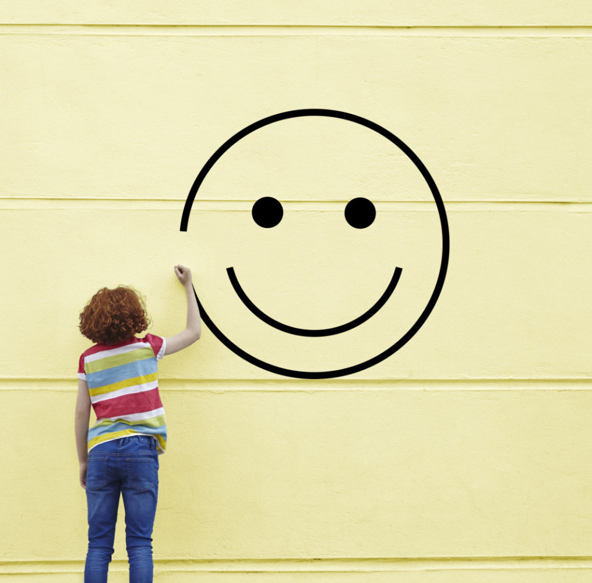

What is happiness?
Is it tangible?
How should you go about getting it?

Many people have attempted to define happiness, and for this website, our definition will be taken from modern psychologists who indicate that happiness is a sense of well-being.
In the pursuit of discovering what makes people happy, researchers have discovered a gene mutation within humans that determine our happiness. This gene controls our happiness set point, or our sense of happiness disregarding recent events that may make us more happy or more sad. That is, after a long time, even if you win the lottery, or lose a limb, eventually, you will return to a certain level of happiness.
However, in our pursuit of happiness, this particular information gives us no information other than the fact that we are born with unequal starting points of happiness, and that some people will always be happier than others.
So what can we do?
“40 percent of our happiness is determined by intentional activity” -Sonja Lyubomirsky
Based on the research of Sonja Lyubomirsky 50% of our happiness is based on that set point. Another 10% is based on our circumstances which are largely unchangeable. However a full 40% is based on our mindset which is entirely up to us and changeable at any time.
Our aim is to inform readers on different mindsets college students may adapt in order to become a happy individual, and how to avoid being stuck in mindsets that may be harmful to our happiness.